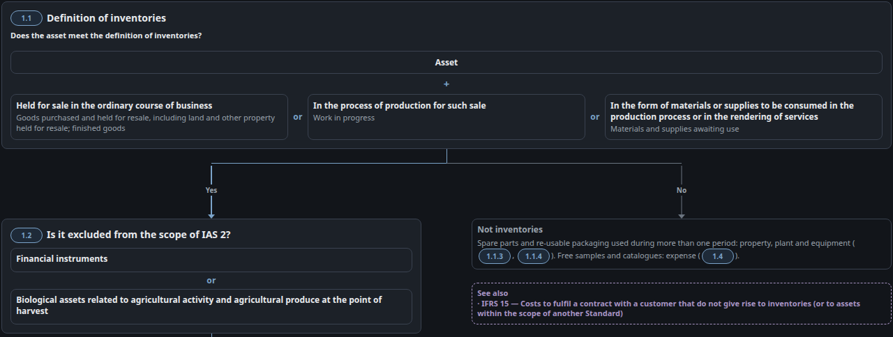
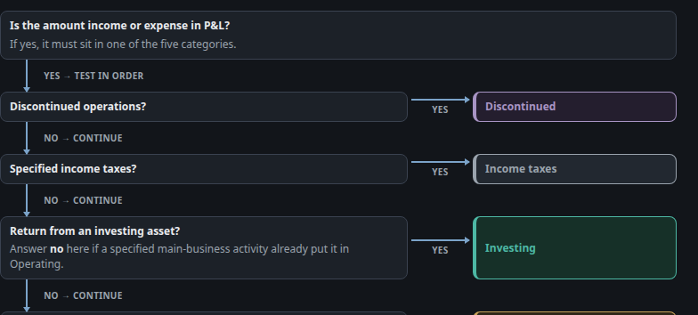
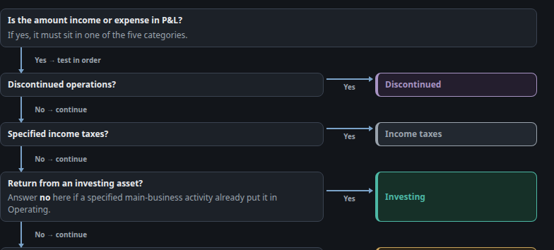
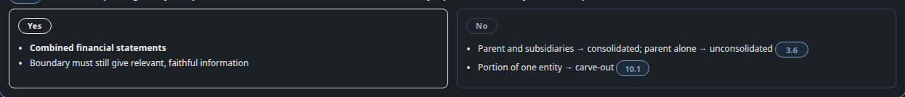
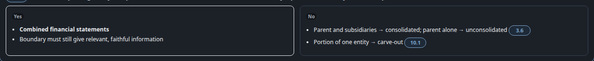

S3 · Yes / No on arrows: one label
Rule 6 — same logic, same format. Six live styles become one: T3 700 muted, first letter capital, no border.
Before · live todayIAS 2 ch01 .stem-label “yes / no”
After · proposal“Yes / No” via ::first-letter; source text unchanged

Before · live todayIFRS 18 ch03 .pc-stem-label CSS UPPERCASE

After · proposaluppercase dropped; first letter capital

Before · live todayCF ch09 .mid outlined pill

After · proposalpill border dropped; same label as every other fork
